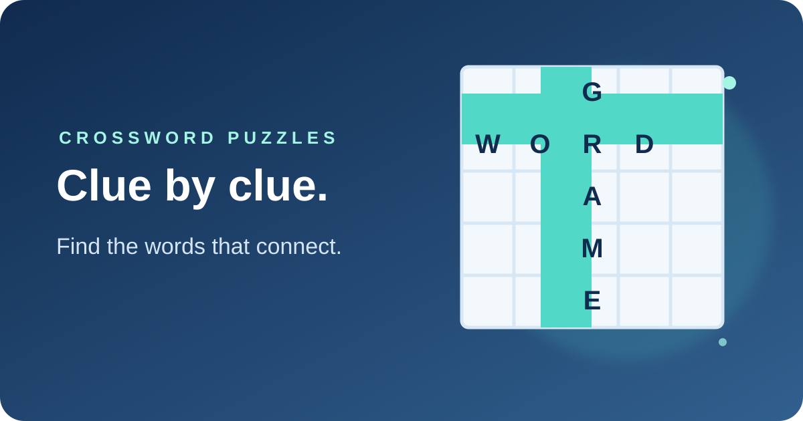

Play Free Online Crossword Puzzles and Challenge Your Brain
Explore clues, word patterns, and a fresh online crossword challenge in your browser.

Looking for a fun way to challenge your vocabulary and keep your mind active? Crossword puzzles offer an enjoyable combination of language, logic, and problem-solving. With Crossworld, you can explore online crossword challenges directly from your browser without downloading additional software.
Crossword puzzles are more than filling empty boxes with letters. Every clue encourages you to think creatively, recognize word patterns, and connect different pieces of information.
Why Play Online Crossword Puzzles?
Online crossword games make traditional word puzzles accessible whenever you have a few minutes available. Solving clues can encourage vocabulary exploration, concentration, logical thinking, and creative problem-solving, all through a familiar word game.
How to Play Crossword Puzzles
- Open the Crossworld Daily Crossword.
- Read the Across and Down clues carefully.
- Identify words that match the clues and their lengths.
- Fill in the corresponding puzzle spaces.
- Use intersecting letters to help solve difficult answers.
- Complete the puzzle and come back for another challenge.
Tips for Solving Crossword Puzzles
Start with the clues you understand immediately. Completing easier answers gives you additional letters that can help solve more challenging words. Pay attention to word length, spelling, and the relationship between intersecting answers. If a clue is difficult, move on and return to it with a fresh perspective.
Frequently Asked Questions
Are online crossword puzzles free?
Crossworld offers browser-based crossword entertainment. Visit the game page to explore the available challenges.
Can I play crossword puzzles on my phone?
You can access Crossworld through a mobile browser. The experience depends on your device and browser compatibility.
Are crossword puzzles suitable for beginners?
Yes. Crossword puzzles can be enjoyed by beginners and experienced word-game fans alike.
Ready for a Word Challenge?
Give your brain a different kind of entertainment. Explore Crossworld crossword puzzles and discover how enjoyable solving words can be.